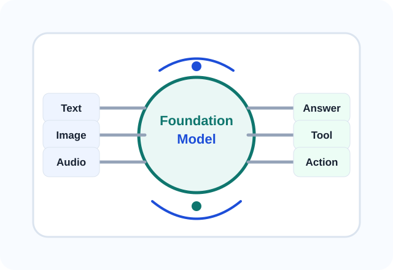

AI Language Models and Foundation Models
اس module میں آپ سیکھیں گے کہ بڑے زبانی model صرف اگلا لفظ نہیں چنتے، بلکہ وسیع data سے عمومی patterns سیکھ کر مختلف کاموں میں مدد دیتے ہیں۔
ہم Foundation Model، Transformer، Encoder، Decoder، Multimodal نظام، AI Agent، Memory، Tools، Transfer Learning اور SLMs کو آسان اردو میں سمجھیں گے۔ English صرف وہاں رکھی گئی ہے جہاں technical لفظ اپنی اصل شکل میں پہچاننا ضروری ہے۔
موضوعات شروع کریں
اس module کے حصے
ہر حصہ ایک بنیادی تصور، آسان مثال، عملی احتیاط، اور آخر میں مختصر سوالات کے ساتھ بنایا گیا ہے۔
Foundation Models کی تعریف
کون سی چیز model کو foundational بناتی ہے، scale کیا بدلتا ہے، emergence کیا ہے، اور Transfer Learning کیوں اہم ہے۔
یہ موضوع پڑھیںEncoder، Decoder اور Transformer
Transformer blueprint، BERT، GPT، Llama، T5 اور BART کے بنیادی فرق آسان الفاظ میں۔
یہ موضوع پڑھیںMultimodal Systems کا ارتقا
Text سے آگے image، audio، video اور documents کو سمجھنے والے systems کیسے بنتے ہیں۔
یہ موضوع پڑھیںAI Agents: Tools، Memory، Autonomy
سادہ chatbot کی حد، agent framework، tool use، memory، autonomy، risks اور security۔
یہ موضوع پڑھیںHands-on: Applied Transfer Learning
ایک practical scenario میں پہلے سے trained model کو نئے کام کے لیے استعمال کرنے کی strategy۔
یہ موضوع پڑھیںFuture Trends and Conclusion
Text سے action تک سفر، SLMs کا rise، اور future learning کے لیے final thoughts۔
یہ موضوع پڑھیںModule Quiz
پورے module کی revision، checklist، اور final quiz کے ذریعے اپنی سمجھ check کریں۔
Quiz شروع کریں